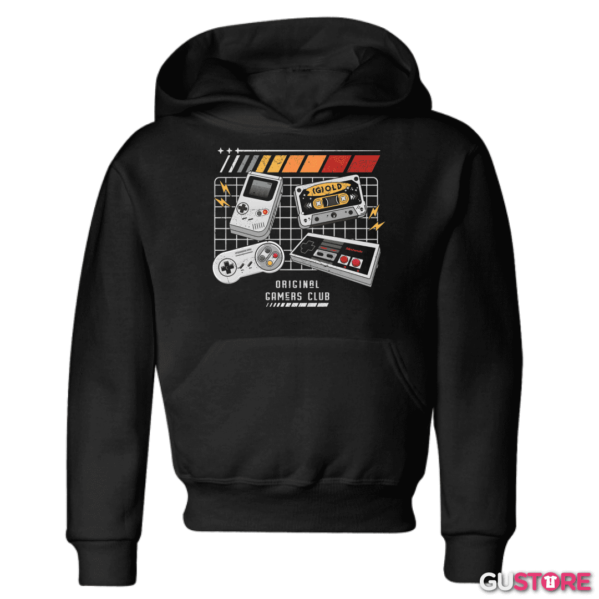
Poleron Gamer Personalizado Merch 1
Polerón Hoodie con capota ajustable y bolsillo canguro. Confeccionado en algodón franela fleece con interior perchado ultra suave para protegerte del frío en invierno.
$19.990Comprar ahora


Polerón Hoodie con capota ajustable y bolsillo canguro. Confeccionado en algodón franela fleece con interior perchado ultra suave para protegerte del frío en invierno.
$19.990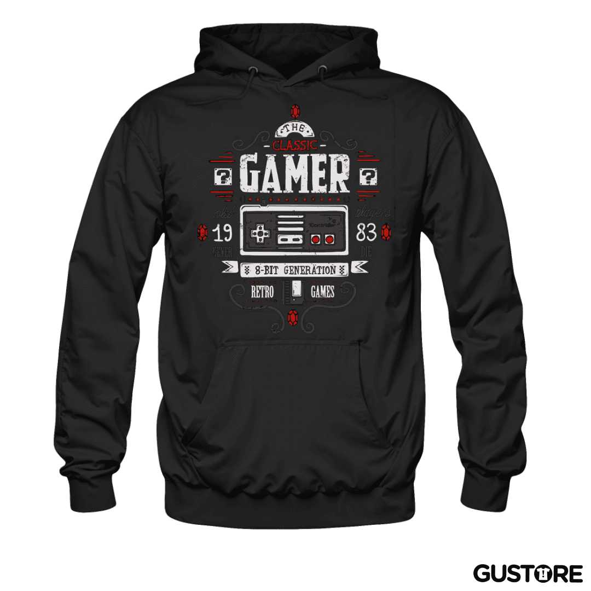
Polerón estilo streetwear gamer con cierre frontal de cremallera metálica, puños acanalados y estampado trasero oversize de alta calidad en serigrafía.
$21.990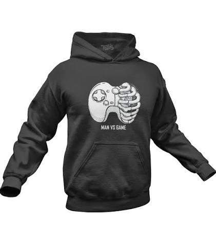
Polerón de colección estilo Cyberpunk de edición limitada. Confeccionado en mezcla térmica de algodón de 320g con aplicaciones bordadas en las mangas y el pecho.
$49.990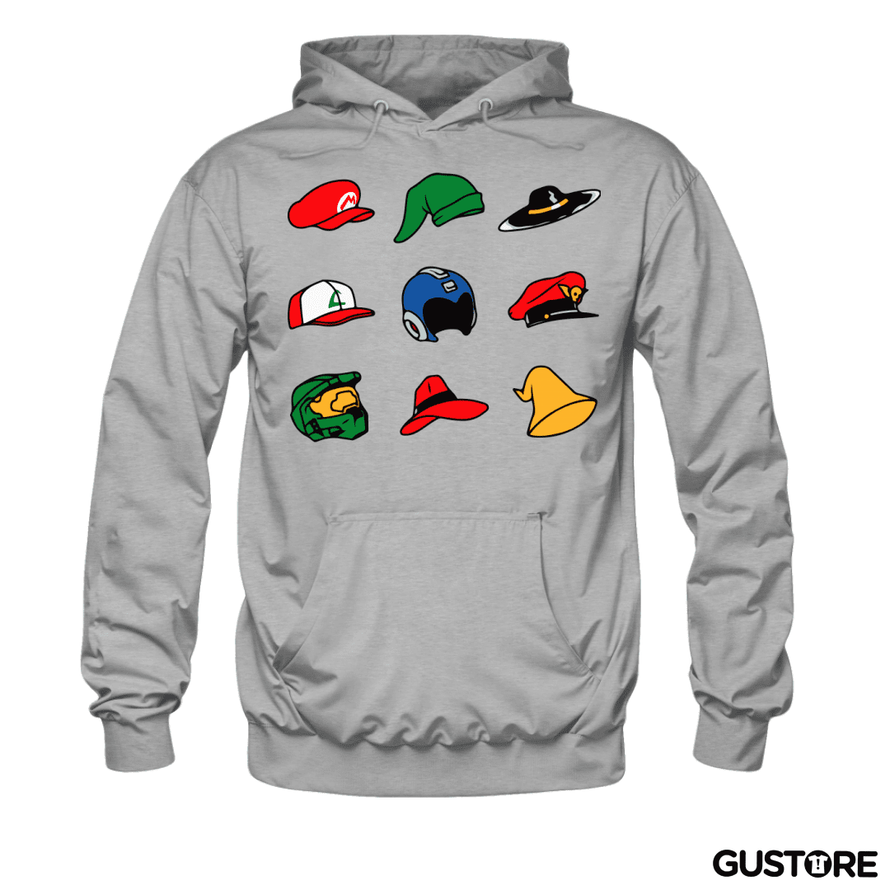
Polerón táctico gamer con cuello alto y gorro con cordones ajustables. Tejido térmico impermeable con tratamiento anti-motas (anti-pilling).
$64.990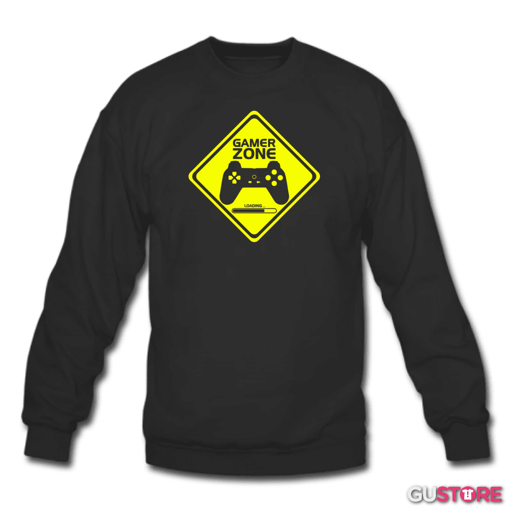
Polerón ligero sin franela ideal para media estación. Estampado gráfico minimalista con tintas ecológicas suaves al contacto directo con la piel.
$9.990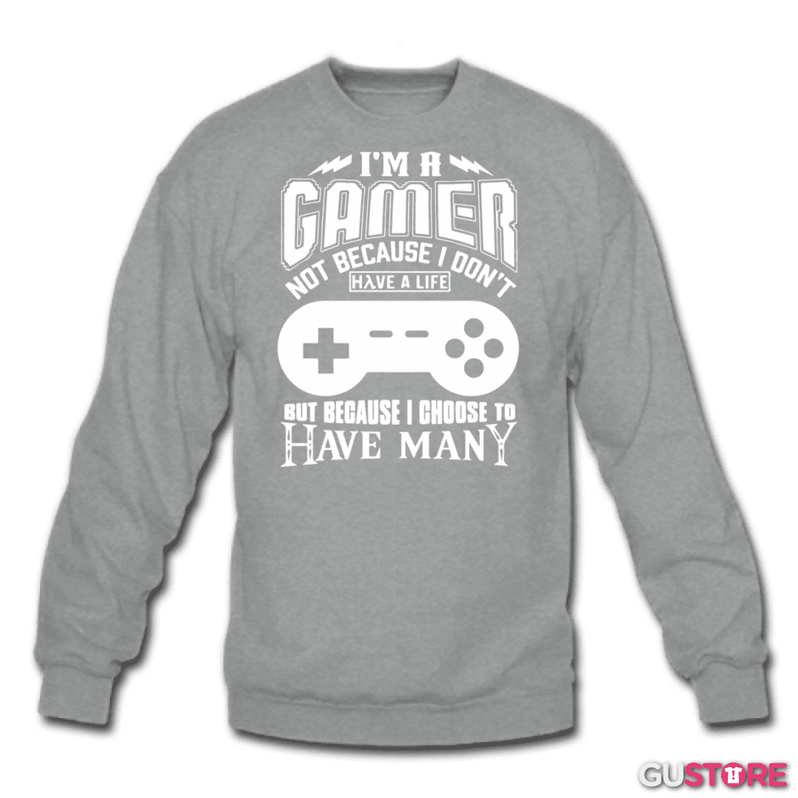
Polerón clásico color negro con estampado frontal neón eSports. Costuras dobles reforzadas en hombros y sisas para máxima resistencia.
$29.990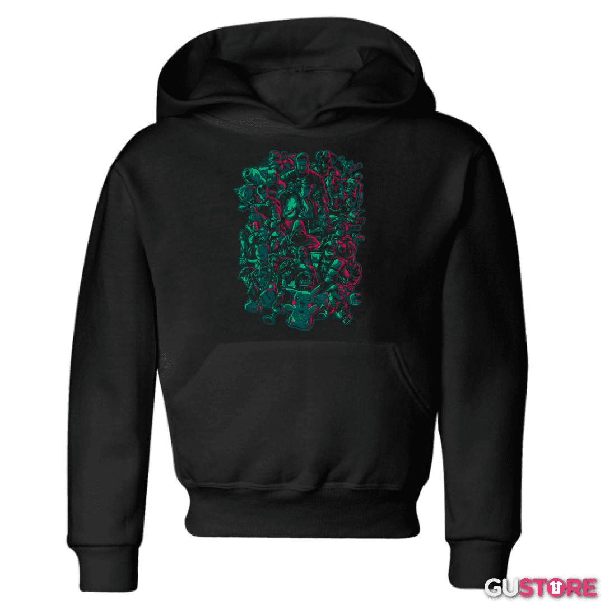
Polerón canguro unisex con fit holgado moderno. Interior afelpado súper abrigador, perfecto para maratones de juego nocturnas.
$20.990
Polerón retro con diseño gráfico de consolas clásicas. Tela de franela de 300g con excelente retención del calor corporal.
$14.990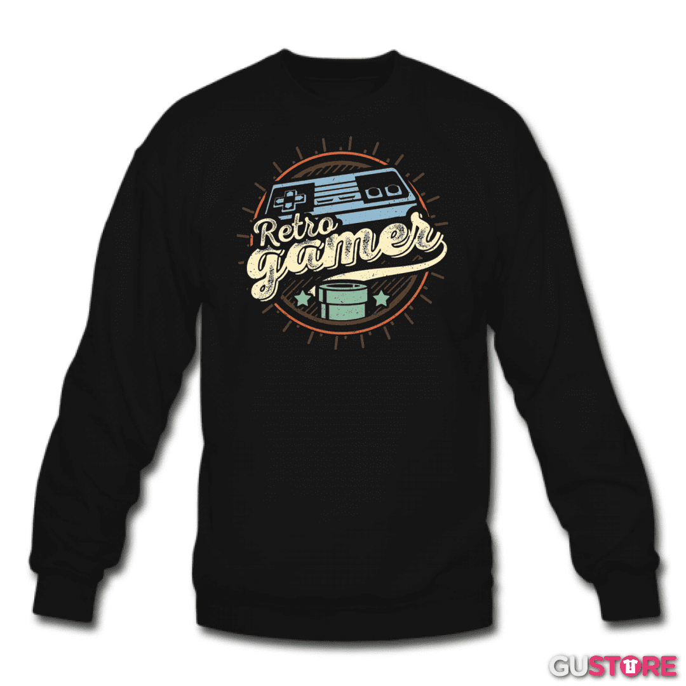
Polerón de estilo urbano anime con capucha forrada en contraste de color. Puños y pretina de rib elástico de alta densidad.
$11.990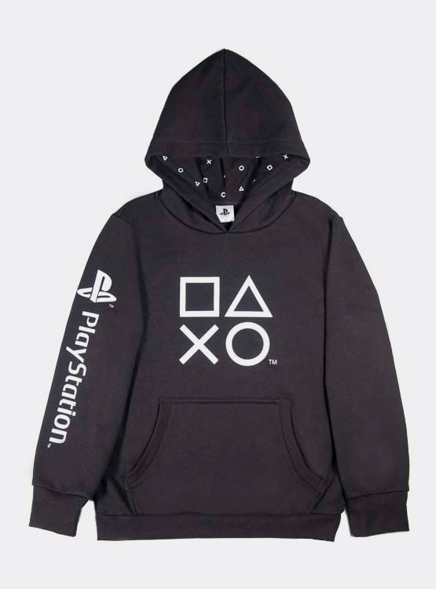
Polerón premium con bordado frontal 3D de alto relieve de La Taverna Gamer. Fabricado en algodón orgánico de comercio justo.
$69.000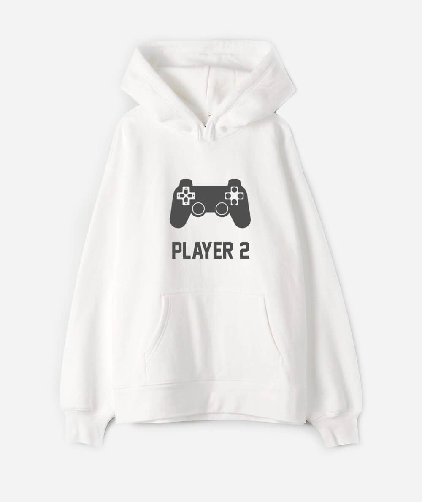
Polerón casual con cierre completo en el cuello y bolsillos laterales invisibles. Diseño moderno, elegante y muy cómodo.
$17.990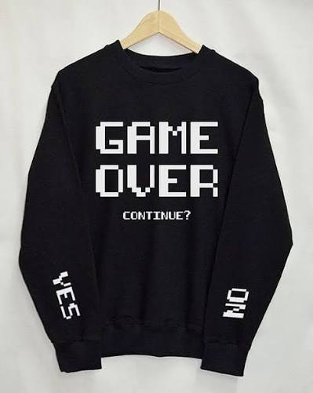
Polerón hoodie artístico con diseño de paisaje digital en tonos neón. Impresión por sublimación completa HD que no se degrada con las lavadas.
$19.500